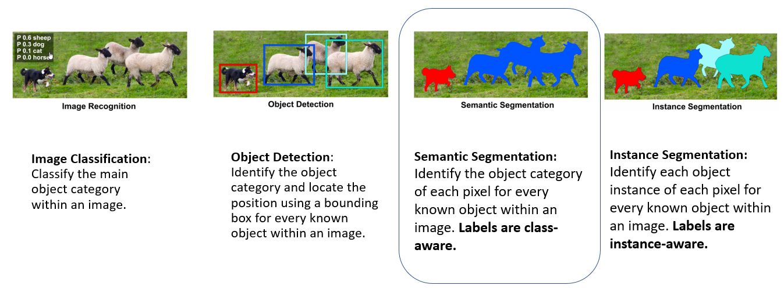

Medtronic
Jan 2026 – Present | Minneapolis, MNSenior Data Engineer, Data and AI
Leading a cross-functional team building domain-oriented data products on cloud platforms (AWS, Azure), enforcing Medallion Architecture and Data Mesh principles to make data assets reusable and scalable across the enterprise.
- Operationalized enterprise-wide data governance standards for AI/ML workflows, agents, and skills, ensuring compliance and platform security in a regulated medical device environment.
- Architected scalable AI and MLOps pipelines and implemented feature stores, establishing repeatable infrastructure for model delivery.
- Partnered with business stakeholders to deliver streamlined data products and advanced analytics, improving decision-making velocity by 20% within three months of joining.
- Defined technical strategy and mentored team members on agentic AI and large language model pipelines, optimizing production performance.
- Technologies: cloud platforms (AWS, Azure), SQL, Python, BI, MLOps, feature stores
Boston Scientific
Nov 2022 – Dec 2025 | Arden Hills and Maple Grove, MNSenior Data Engineer, Data and AI (Feb 2024 – Dec 2025)
Led an enterprise data and analytics platform serving over 1,500 users and delivering $2.4M in annual savings. Implemented Medallion architecture (Bronze, Silver, Gold) on cloud platforms for enterprise scalability and consistent data quality tiers.
- Subject matter expert (SME) in fostering a high-performance data culture, managing and mentoring cross- functional teams (8+ analysts, researchers, domain experts, engineers, scientists, and leaders), increasing team productivity and reducing data science and analytics project backlog by 40% within 12 months.
- Launched self-service analytics and predictive solutions (Tableau, notifications, data automation, forecasting, insights recommendations) across North America, EMEA, APAC, and LATAM, improving executive decision-making speed and reducing ad-hoc reporting requests.
- Increased user adoption by 10% through a strategic migration to centralized analytics interfaces. Analytical tools: cloud platforms (AWS, Azure), SQL, Python, BI, ETL, AI/ML, RPA, automated data pipelines.
- Headcount projections and attrition forecasting: Built attrition forecasting models using gradient boosting and survival analysis, and ARIMA-based headcount projection models supporting the Annual Operating Plan, giving HR and Finance leadership a forward view of workforce risk rather than a backward report of what had already happened.
- Facilitated strategic prioritization meetings with Steerco, Program, HR, Finance, and IT partners to assess the effort, value, and urgency of projects focused on utilizing data, machine learning, and AI techniques to improve the organization's talent analytics capabilities.
- Advised leaders, providing data-backed solutions and partnered with executives at all levels and HR leadership to deliver actionable insights, analyzing organizational health (headcount trends, growth forecast, hiring, internal mobility, DE&I, and employee experience) to support strategic business decisions.
- Owned the governance of HR data and reporting methodologies, ensuring consistent data definitions, metrics alignment, and 100% compliance with privacy policies.
- Technologies: cloud platforms (AWS, Azure), SQL, Python, BI (Tableau, Power BI)
Senior Data Engineer, Consultant, Cardiology Sales Operations (Nov 2022 – Feb 2024)
- Led the strategic development of analytics and data platforms for Cardiology Sales Operations(Cardiac Rhythm Management, Atrial Fibrillation, and Interventional Cardiology Therapies), establishing a governance framework that improved data integrity, drove innovation, and made insights accessible to businesses, improving decision-making by 40%. (AWS, Alteryx, Snowflake, Python, SQL, and Tableau)
- Investigate and resolve data inconsistencies, ensuring accuracy and reliability across several data sources.
Crowd Capital
Mar 2022 – Oct 2022 | Miami, FL (Remote)Senior Data Engineer
Led analysts and business partners to introduce a new business-innovated Automated Property Scoring Module on AWS; accelerated bidding strategy, scaled decision-making from 20 to 1000+ bids, and increased profits by $300K in quarterly recurring revenue within twelve weeks of joining.
- Communicating with stakeholders to study domain and build data product requirements.
- Supervised a team of two data engineers, helping them learn and grow.
- Collaborated on Building robust Property Scoring Module Analysis and Developing Bid Optimization by querying big data. (CloudTech/AWS/Azure, BigData/Databricks, Python, Spark/Distributed Computing, Containers/Docker/Serverless, SQL REST APIs, CI/CD, Windows/UNIX Systems).
- Implemented big data solutions that extract, transform, validate and load (ETL) real-state mortgage industry data and house industry analytics.
- Illustrated property investigation team to engage, retain, and acquire new properties.
- Assessed current processes and implemented data engineering and application development track for the organization.
- Investigation of data inconsistencies for the team to understand the root cause and fix the issue.
- Technologies: Python, Spark, SQL, AWS
Emeritus
Oct 2021 – Apr 2022 | RemoteSubject Matter Expert - Data Engineering
Supported Data Engineering curriculum and academic content delivery. Worked on tool integration and module troubleshooting with Professors and content management teams.
- Data Engineering Content development, modules review, and troubleshooting workflows.
- Weekly Meetings, Videos reviews, Data Engineering Tools Troubleshooting, Team Engagement, and Support.
- Manage and help deliver learning Module Content.
- Technologies: SQL, Python, Educational Tools
Global Overview
Oct 2020 – Feb 2022 | Minneapolis, MNLead Data Engineer, previously Data Engineer and ETL Developer
- Achieved $6M+ in cost savings and revenue enablement across retail, operations, and marketing analytics for 100+ Amazon partner accounts, while mentoring a team of six analysts and engineers.
- Built a marketing spend model across DSP, OTT, and search against sales, using multi-touch attribution, cross-channel optimization, and A/B testing to guide allocation.
- Unified legacy data into an analytics-ready warehouse, reducing costs by $2M annually within two quarters.
- Rebuilt a data swamp into a warehouse in about three months, consolidating 560+ tables into 20 to 30 governed tables through grain evaluation. (AWS RDS, PostgreSQL, Alteryx)
- Improved external marketing and sales report performance from unusable to two-second refreshes, and restored Tableau Server after a crash with a backup strategy to prevent recurrence.
- Built AWS data infrastructure from scratch, including access control and environment management, and interviewed data engineering candidates to support hiring decisions.
Cytilife Inc.
Feb 2019 – Oct 2020 | Minneapolis, MNData Scientist
Analytical Pipeline (AWS Web Services Stack: Built robust analytical infrastructure connecting structured and unstructured data sources from data sources such as (RDS, Click Stream and logs) to AWS Redshift, AWS EMR for ease of use by different analysts using Pandas, AWS Athena and QuickSight. (Amazon Kinesis Data Firehouse, AWS S3, AWS Lamda, Glue, DMS, Athena).
Migrated Analytical Artifacts from Tableau to AWS Quicksight with a team of four, leading to $500K in cost savings annually.
Cloud Computing: The AWS infrastructure for the real-time data analysis that involves visualizing and Forecasting Resource Utilization (100K to Millions of rows) of processed data on AWS S3. This helps the administration to investigate business insights from campus resource usage from IoT and Applications Data to determine space and equipment’s demands to take strategic budgeting and resource requirements decisions. (Python, SQL, Visualization).
Data Warehousing: Evaluating and Performing Grain Evaluation: Identified the granularity of each table and business process to drill down to very important dimensions and measures. Various scenarios and Questions got brainstormed to improve the intelligent system. (SQL, MySQL, Visualization).
ML Insights and Anomaly Detection: Python, QuickSight Visualization, Tableau.
Computer Vision: Building real-time people counting application Dashboard for University Administration. OpenCV, Python, AWS.
Usage Forecasting: End to End, Designed Forecasting App with machine learning pipeline and hosted model on Rest API to utilize it making predictions. Pytorch, Python, MySQL, Django, AWS. Deployed machine learning model as a REST API using AWS services like ECR, Sagemaker and Lambda for the Mobile App Development.
- Continuous coordination with QA team, production support team and deployment team.
- Worked on documenting all tables created to ensure all transactions are drafted properly.
University of St. Thomas, St Paul.
Mar 2018 – Dec 2020 | St Paul, MNResearch Assistant
ML/AI Projects
Research Assistant Machine Learning: Unsupervised Contextual Clustering of Abstracts. Used NSF abstract data (300K to Millions of rows) for the last 34 years producing document context through Gensim Doc2Vec Model which suggests similar abstracts based on given abstract. (Deep Learning, ML, NSF, NLP, Python, Visualization, SAS). The submitted paper is being selected at SAS Global Forum 2020 and My Team ranked 1st in the Nationwide SAS Competition. Working on BERT/GPT Models to perform transfer learning/document embeddings.
#Publication #YoutubeVideoAWSMktPlaceApp: AWS Implementation of the machine learning model as a REST API using Docker(with pre-requisite libraries) and AWS services like ECR, Sagemaker and Lambda for the AWS Marketplace Competition.
Computer Vision - Semantic Image Segmentation Fall 2019: Developed Computer Vision Project. This is Artificial Intelligence Class project was meant to familiarize and apply understanding from DL and ML methods solving Semantic Image Segmentation Problem. (Deep Learning, Pytorch Python, OpenCV, GPU Programming, Deep Learning).
Classification: ML Project: Kickstarter projects to predict the crowdfunded project would be successful, cancelled or unsuccessful.(Scikit Learn, RandomForest, XGBosst, LightGBM, Python, SNS, Pandas, Machine Learning etc..).
Classification- AIM Consulting Hackathon: Won the competition. Designed and developed machine learning classifier on a highly imbalanced dataset. (Scikit Learn, RandomForest, XGBoost, Python, SNS, Pandas, Machine Learning)
Kaggle.com and Hackerrank.com (Some of my Recent Projects Listed Below) – Since 2015:
- Jigsaw Unintended Bias in Toxicity Classification NLP – created classifying text comment model based on toxicity sentiment considering gender bias into the picture, BERT, LSTM – Top 8% (225/3165 competitors) (NLP, Python, Pytorch, Deep Learning).
- Built Image Classifier(Diabetic Retinopathy)– Fastai, Pytorch, Machine Learning, Deep Learning, OpenCV - Top 11% (298/2943 competitors, Deep Learning).
Big Data Projects
AWS Data Lake Automation (Serverless): Developed automated cloud formation template to create data lake which ingests the customer’s data, maps it into an analysis-ready structure and makes this data and dashboards available to end-users. Tools Used: AWS Services which includes Cloud Formation, S3, Kinesis, Redshift cluster, Tableau, EMR(Spark/Hadoop), SageMaker, Amazon Athena, Amazon Kinesis, Amazon QuickSight, Amazon Simple Storage Services (S3), AWS Big Data, AWS Database Migration Service, AWS Glue, AWS Lambda.
BigData Architecture: Hands-on experience, working on Apache Hadoop ecosystem components like MapReduce, HDFS, HBase, Hive, Sqoop, Pig, Oozie, Zookeeper, Flume, Spark, Python and EC2 cloud computing with AWS. Build Architecture from scratch to store the dataset from twitter to Hadoop and then perform data analysis using spark/pyspark. (Hadoop, Spark, NiFi, Oozie).
- Used Sqoop to import data from different RDBMS systems like MySQL, Oracle and loaded into HDFS. Developed Map-Reduce programs to clean and aggregate the data.
- Developed workflow in Oozie to manage and schedule jobs on Hadoop cluster to trigger daily, weekly and monthly batch cycles. Extensive knowledge of working on NiFi.
Software Development Projects
Software Development- UST MicroGrid Monitoring and Controller: Software Development Project Work. Identifying requirements and developing MicroGrid Devices Controlling System. Angular CLI, ReactJS, Java Spring, MySQL, Linux, Ruby, InfluxDB. #ResearchWork
- Responsible for understanding the scope of project and requirement gathering.
- Used Tomcat web server for development purpose.
- Involved in creation of Test Cases for Unit Testing.
- Developed application using Eclipse and used to build and deploy a tool like Maven.
- Used Log4J to print logging, debugging, warning, info on the server console.
Django Web Application: Created Graduate Program in Software department-wide Web-based Software Request System. (Python, Django, MySQL)
Audio Tagging Application: Implemented Audio Tagging application using various Natural Language Processing techniques and Django Web Framework. (BERT, Google Speech to Text, Google Content Classifier, Python, Django, MySQL, GPUs).
Minnemudac 2019
Sep 2019 – Dec 2019 | MNMultivariate Time Series LSTM Predictor: Learned and perfomed detailed analysis from scratch to produce best performing model. Used ideas from Stats, ML,Deep learnig and Commodity market to produce Multivariate Prediction Model. Our Student Team from St. Thomas GPS participated in two consecutive MinneAnalytics competitions (MinneMUDAC and FastCon 2019) and our work was one of the most competitive among the top performers leading most of the teams behind in predictions and technical Design Approach. We were ranked second based on our 15 days prediction for 3 different Soybean's future contract price.
- FastCon 2019 Results (Team G23)
- MinneMUDAC 2019 Results (Team G23)
- Machine Learning Pipeline - 5 Days Soybeans Predictions Web Page - In Development
For more information. Click Here
Semantic Image Segmentation
Aug 2019 – Dec 2019 | St Paul, MNSemantic Segmentation: Identify the object category of each pixel for every known object within an image. Here, Labels are class-aware.

Unet Architecture: U-Net is Fully Connected Network that consists of a contracting path (left side, learns classification) and an expansive path (right side, learns segmantation masks).
Pytorch: PyTorch is an open source deep learning framework built to be flexible and modular for research, with the stability and support needed for production deployment. It enables fast, flexible experimentation through a tape-based autograd system designed for immediate and python-like execution.
For more information. Click Here
Unsupervised Contextual Clustering of Abstracts
Sep 2019 – 2020 | St Paul, MNIn this paper, various machine learning techniques are demonstrated to explore, analyze and recommend similar proposal abstracts to aid the NSF or Awardee with the Merit Review Process. These techniques extract textual context and group it with similar context. The goal of the analysis was to utilize the unsupervised learning algorithms to embed NSF funding proposal abstracts text into vector space. Once vectorized, the abstracts were grouped together using K-means clustering. These techniques together proved to be successful at grouping similar proposals together and could be used to find similar proposals to newly submitted NSF funding proposals.
BERT Language Model: BERT builds upon recent work in pre-training contextual representations — including Semi-supervised Sequence Learning, Generative Pre-Training, ELMo, and ULMFit. However, unlike these previous models, BERT is the first deeply bidirectional, unsupervised language representation, pre-trained using only a plain text corpus.
For more information. Click Here
Recent Works (Esc to view a list of slides and 125% zoom browser to view material clearly):
- InsideHired Fundraising DataSet Exploration
- AIM Consulting Hackathon: Won the competition. Designed and developed machine learning classifier on a highly imbalanced dataset. (Python, SNS, Pandas, Machine Learning)
- Kickstarter CrowdFunding Dataset(ML Model)
- Machine Learning Pipeline - 30 Days Soybeans Predictions Web Page - In Development
- Summer Fellow at IISc Bangalore: Implemented Wireless Security Environment with Java Glomosim Library and redesigned Security structure to optimize WPA Compatible Network. (Java)
For more information. Click Here
Amphora Inc.
Feb 2012 – May 2017 | Hyderabad, IndiaSenior Build Analyst
Backend services and automation for a commodity trading and risk management platform, working with oil trading clients including Mercuria Energy, Noble Group, Arcadia, and Eni.
- Responsibilities consisted of Requirements gathering, estimating change requests, Designing and developing code, scripting database stored procedures and functions, Participate in client meetings. Primary technologies involved Java, .NET, Web Services, SQL, Jira, Git, DevOps, CI/CD, Worked with oil trading clients like Mercuria Energy, Noble Group, Arcadia, Eni..
- Notifications: Developed service for sending an email, push and in-app notifications. Involved in features such as delivery time optimization, tracking, queuing and A/B testing. Built an internal app to run batch processing for software delivery etc.(Java, MS SQL)
- Trade Aggregator: Simplified bulk data processing and injection service from global exchanges to CTRM and provides preprocessed data for application users. (Unix/Linux, Java, MS SQL)
- Workflows: Outlined and improved Apache Ant workflow to create and manage build and testing pipelines leveraging automation to expedite development productivity. (JavaScript)
- Remote Application Services Management Tool: Improved multi-server application service control by building a new application for software product allowing easy handling over multiple remote server environments including DB Scripts Automation. (C#, MS SQL)
- Technology Migration: Lead team and Effectively implemented GitHub/SCRUM migration process for the development team, which helped developers smoothly transition code repository from TFS to Git. (Git, Subversion, TFS)